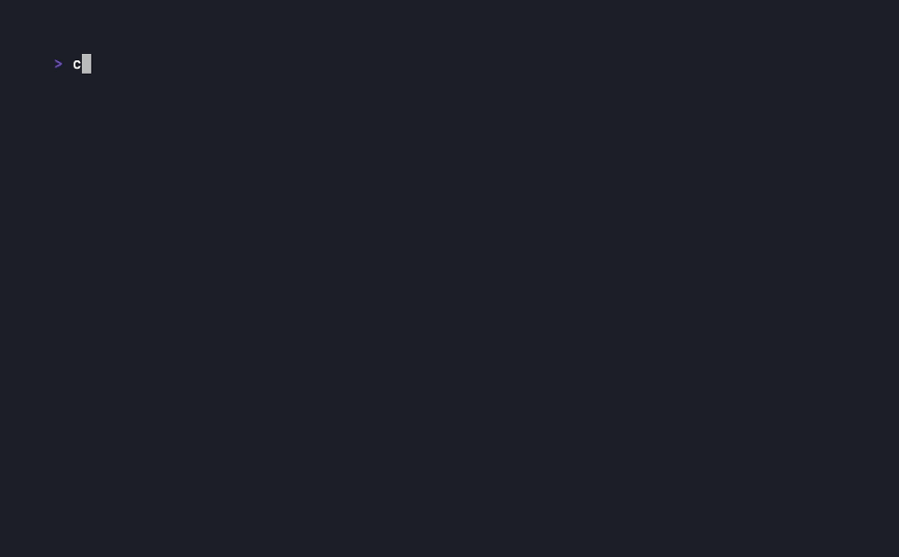

lazyshell
Un gestionnaire de sessions shell dans le terminal, façon tmux, avec l'interface
à deux panneaux de lazygit : la liste de vos sessions à gauche, la sortie vivante
de celle qui est sélectionnée à droite.

Pourquoi lazyshell
Les sessions continuent de tourner en arrière-plan — leur historique préservé — même pendant que
vous en regardez une autre. Le panneau de sortie est un véritable émulateur de
terminal : vim, htop et less tournent
à l'intérieur d'une session, curseur et couleurs compris.
La différence avec tmux tient en une phrase : ici on ne mémorise pas une grammaire
de préfixes, on lit une liste. Chaque session est une ligne, avec son état, son PID, son
répertoire ou le titre que le shell a posé — et, pour une session d'agent IA, le fait qu'elle
attend une réponse de votre part.
Démarrage rapide
# avec Go installé
$ go install github.com/thomas-gleizes/lazyshell/cmd/lazyshell@latest
$ lazyshellDans l'interface : n ouvre une session, Tab change de panneau, i ou Entrée donne le clavier au shell, Ctrl+O le reprend, ? affiche l'aide complète et q quitte. Les autres méthodes d'installation sont sur la page dédiée.
Points clés
Sessions persistantes
Changer de sélection n'arrête rien : le pty et le shell survivent, seul l'affichage est recyclé. Une session sortie reste listée, prête à être relancée.
Vrai émulateur de terminal
Écran alterné, couleurs, curseur, redimensionnement propagé au pty : les applications plein écran fonctionnent réellement dans le panneau.
Agents IA de première classe
claude, codex, opencode sont détectés sans
configuration, et l'état bloqué / terminé remonte jusqu'à une notification
du terminal hôte.
Onglets par session
terminal, ressources (CPU, RSS, courbes) et environnement : ce que le process consomme et avec quel environnement il a démarré, sans quitter lazyshell.
Configuration de projet
Un lazyshell.yml versionné démarre les sessions d'un dépôt — chacune dans son
dossier, avec sa commande et ses fichiers .env. Approuvé une fois, jamais
silencieusement.
Souris, copie, recherche
Clic, molette et glissé par défaut, copie via OSC 52, recherche dans l'historique, diffusion d'un même clavier vers plusieurs sessions.
Pour aller plus loin
- Utilisation — panneaux, raccourcis, onglets, souris, diffusion.
- Configuration — emplacement du fichier, précédence, référence complète des options.
- Sessions d'agents IA — détection, hooks autoritaires, notifications.
- Configuration de projet —
lazyshell.yml, fichiers.env, approbation. - Développement — construire, tester, et la structure du code.
Plateformes. macOS et Linux. Windows est hors périmètre assumé : il n'y a pas de pty Unix, et tout le rendu du panneau de sortie repose dessus.